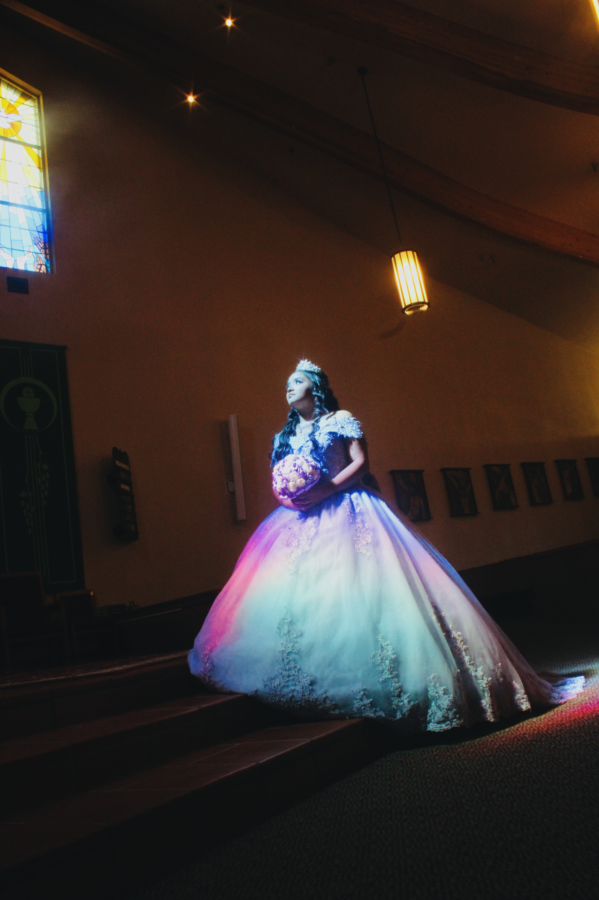

Portraits &
milestones
Individual portraits, graduation photos, couples, and moments worth celebrating.
Ask about portraits ↗The beautiful, unexpected, and in-between. Photography that captures not just how it looked, but how it felt.
Independent photographer California

Honest moments. Intentional images. Lasting stories.
From portraiture to the quiet energy of a city after dark, these photographs reflect an eye for atmosphere, color, and the moments between moments. Select an image to see it larger.
Whether you're marking a milestone or simply want to document this chapter of your life, let's create images that feel like you.
Individual portraits, graduation photos, couples, and moments worth celebrating.
Ask about portraits ↗Meaningful gatherings, cultural performances, quinceañeras, and community events.
Ask about events ↗Personal projects, collaborative concepts, street-inspired images, and visual storytelling.
Let's collaborate ↗All sessions are discussed individually. Dates, location, deliverables, and pricing are confirmed before booking.
I’m interested in the feeling as much as the frame.
I'm Dezmen Acosta, an independent photographer drawn to atmosphere, meaningful moments, and visual storytelling. My work moves between portraits, celebrations, and the places that stay with us.
I approach each image with an eye for light, connection, and the details that make a moment personal. Whether we're planning a portrait session or documenting a gathering, the goal is to create photographs you'll want to return to.
Have a date, an idea, or a moment you want photographed? Send a little about what you have in mind, and we'll talk through the details.
Email a booking inquiry Or email directly: Allzawsome100@gmail.com